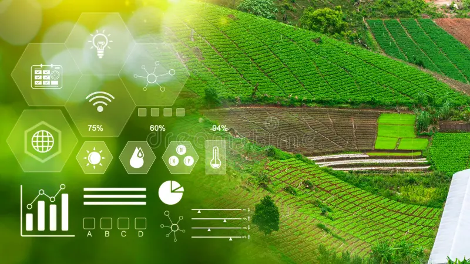

Empowering every harvest with precision data, AI-powered crop advisory, real-time weather forecasting, market prices, and smart disease detection.

Personalised Data-Driven Farming
A complete precision agriculture suite built to help farmers make data-driven decisions at every stage of the crop cycle.
Expert AI-powered guidance on fertilizers, irrigation scheduling, and seed selection tailored to your soil and weather.
Hyper-local real-time weather forecasts, rainfall predictions, and frost alerts powered by OpenWeather API.
24×7 chatbot for farmers — ask questions in your native language and get instant personalized farming advice.
Fully supports Telugu, Hindi, and English with voice input and text-to-speech capabilities for every farmer.
Upload a photo of your crop leaf — our CNN model identifies diseases with 92%+ accuracy and suggests treatments.
End-to-end encrypted farmer data with JWT-secured APIs and MongoDB Atlas cloud storage for complete privacy.
Four simple steps to transform your farming decisions with the power of AI and precision data.
Register and enter your farm details — location, crop type, soil data, and language preference.
Platform aggregates live weather, soil moisture, and market price data specific to your farm location.
Receive personalized fertilizer, irrigation, and pest management recommendations from our AI engine.
Monitor crop performance over seasons with visual analytics and continuously improve your yields.
Join thousands of farmers using AgriVerse to make data-driven decisions and improve productivity season after season.
Learn about the technology, feasibility, and real-world impact behind AgriVerse's precision agriculture platform.
Personalized fertilizer and irrigation recommendations using ML models trained on ICAR datasets.
Live weather forecasts and eNAM market prices integrated via REST APIs for data-driven decisions.
Speech recognition and synthesis in Telugu, English and Hindi via Google Speech API.
Service worker caching ensures core functionality works even in low-connectivity rural areas.
CNN model trained on PlantVillage dataset — upload a leaf image for instant AI diagnosis.
JWT authentication, bcrypt password hashing, and MongoDB Atlas encryption keep farmer data safe.
Low cost, fully cloud-based, scalable to millions of farmers. No hardware dependency — works on any smartphone.
Rural internet availability, digital literacy among older farmers, and initial data collection for hyper-local models.
Offline PWA mode, SMS fallback for alerts, voice-first UI, and partnerships with Krishi Vigyan Kendras (KVKs).
Average Yield Increase
Small Farmers Benefited
AI Advisory Availability
Languages Supported